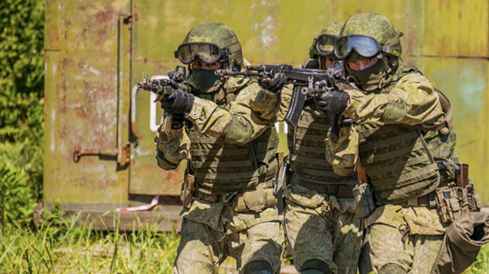
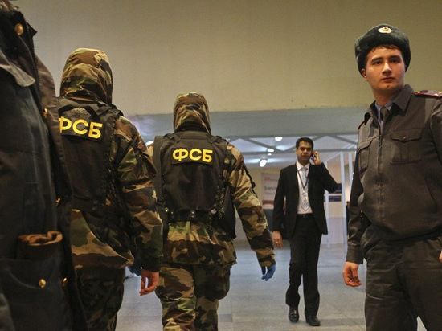

Штаб группировки

252-й ГвМСП
252-й гвардейский мотострелковый полк — основное тактическое соединение Сухопутных войск.
237-й ТП
237-й танковый полк — бронированный кулак группировки, прорыв обороны противника.
16-я ГвБАА
16-я гвардейская бригада армейской авиации — поддержка с воздуха и огневое прикрытие.
ССО
Силы Специальных Операций — элитное подразделение для автономных действий в тылу врага.

ФСБ
Федеральная служба безопасности — контрразведка, антитеррор и защита государственной тайны.
Штаб группировки
Командование объединённой группировкой войск. Координация операций и общее управление.
О проекте
«Разлом: Марш Справедливости» — военный RolePlay-проект, посвящённый историческим событиям и боевым действиям на территории Сирийской Арабской Республики. Мы проводим регулярные RP-операции, патрули и сюжетные события в Garry's Mod, соблюдая принципы адекватности и уважения к истории.
Основная цель проекта — создание атмосферы реальной воинской службы, где каждый боец понимает своё место в структуре, действует по уставу и следует приказам командования. Мы объединяем игроков, которые ценят дисциплину, командную работу и качественный отыгрыш.
Что мы предлагаем
- Пять подразделений — от мотострелков до спецназа. Каждый найдёт своё призвание.
- Подробные уставы — на каждой странице подразделения есть большой свод правил и регламентов.
- Регулярные операции — ежедневные патрули, боевые выходы и сюжетные события.
- Дисциплина и порядок — реальная военная иерархия, звания, награды.
- Дружное сообщество — Discord-сервер с активным общением и поддержкой новичков.
Подразделения группировки
Основное тактическое соединение Сухопутных войск. Полк предназначен для ведения общевойскового боя в любых условиях местности: от обороны укрепрайонов до наступательных операций. В составе три мотострелковых батальона, танковый батальон, артиллерийский дивизион, разведрота и инженерно-сапёрная рота.
Бронированный кулак группировки. Танковый полк предназначен для прорыва обороны противника, поддержки мотострелков и уничтожения бронированной техники. В составе три танковых батальона, мотострелковый батальон поддержки, зенитный дивизион и ремонтная рота.
Воздушная поддержка группировки. Бригада выполняет задачи по разведке, огневой поддержке с воздуха, эвакуации раненых и переброске десанта. В составе вертолётные эскадрильи (Ми-24, Ми-8, Ка-52), эскадрилья БПЛА и технические службы.
Элита группировки. ССО действуют автономно в глубоком тылу противника или в зонах повышенной опасности. Главная цель — достижение максимального эффекта минимальными силами. Специальная разведка, диверсии, освобождение заложников, авианаведение.
Внутренняя безопасность, контрразведка и защита государственной тайны. ФСБ выявляет шпионов и предателей внутри воинских частей, предотвращает теракты, контролирует утечки информации и обеспечивает пограничный контроль.
Общие правила проекта
- Уважительное отношение ко всем участникам проекта — обязательно.
- Соблюдение воинской дисциплины и субординации.
- Запрещены NSFW-контент, политические провокации и разжигание конфликтов.
- Запрещено использование читов и стороннего ПО, дающего преимущество.
- Не выходить из роли (NonRP) во время операций и построений.
- Соблюдение сеттинга и исторического контекста проекта.
- Реклама сторонних проектов — только с разрешения командования.
Как присоединиться
Для вступления в подразделение группировки «Разлом: Марш Справедливости» необходимо:
- Зайти на наш Discord-сервер.
- Ознакомиться с уставом выбранного подразделения.
- Подать рапорт о зачислении в соответствующем канале.
- Пройти собеседование с командиром подразделения.
- Пройти курс молодого бойца и влиться в коллектив.